Learning Objectives
After completing this lesson, you’ll be able to:
- Explain the benefits of using job chaining.
- Use the Filter Action to conditionally trigger a workspace to run.
- Chain multiple workspaces together in an Automation.
Resources
- Starting project | C:\FMEData\Workspaces\AutomateWorkflowsWithFMEFlow\automate-workflows-with-fme-flow--starting-project.fsproject
- ElectionVoting.gml | C:\FMEData\Data\Elections\ElectionVoting.gml
If you're taking a live Safe Software-hosted training course or using an on-demand lab for this course, we've already imported the content for this lesson into your FME Flow.
If you're completing this lesson with your own FME Flow, you must import the starting project with the content into your FME Flow.
Expand for Steps to Import the Starting Project
3) Navigate to your FME Flow and open Projects. Click Import.
4) Upload automate-workflows-with-fme-flow--starting-project.fsproject as the Project File and then click Import.
5) The first step is Preview Content, where you may choose not to overwrite existing items. If all your items are New Items, you don't need to worry about overwriting existing items. Click Continue.
6) The next step is to select connections and tokens to import. By default, they are not selected to be imported. Select the FME Training PostGIS Database Connection to import. If it isn't imported, the workflows will not run successfully. Click Continue.
7) The Resolve Owners step only allows you to reassign the project contents to a different user if the admin user doesn't exist on your FME Flow. Click Continue and then click Import Project from the Additional Options step. The project will import and display its import status from the same page.
If the project import failed, check that you uploaded the encryption key and repeat the process. If it still fails, contact us at train@safe.com.
Job Chaining and Automations
In your workflows, you may want to run multiple workspaces and control their order. With FME Flow Automations, you can chain your workspaces to run one after another in sequence, or you may branch the workflow to run multiple workspaces simultaneously. You may also use logic to control your workflow based on a condition. FME Flow Automations are flexible, letting you place internal and external actions in any sequential order or parallel streams, so you can adapt an Automation however you may need.
An advantage of authoring workspaces to run in sequence is compartmentalizing your workflows. Separating tasks into workspaces makes it easier to see where errors occur, and you can run other workspaces or send notifications if a workspace fails. If the inputs and outputs of the workspaces are independent, you may run the workspaces in parallel, whereby a failure in one workspace does not stop the other workspace from running.
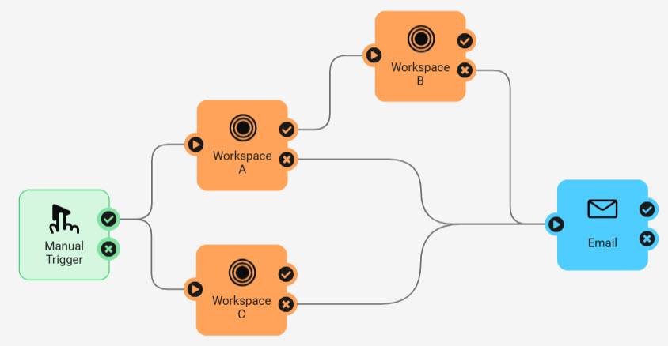
Run Jobs in Sequence
To run actions in sequence, connect them one after the other.
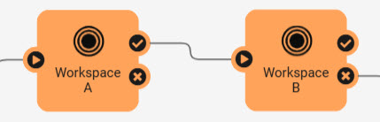
In this example, Workspace B will only run after Workspace A runs and completes successfully. If Workspace A fails, Workspace B will not run. FME Flow will only use one engine in this example because only one translation is being processed at a time.
You should run jobs in sequence if the source data for a workspace depends on the output data from another workspace, your workflow requires tasks to be completed in order, or specific tasks should only be carried out if another task completes successfully.
Run Jobs in Parallel
Connect actions to a common starting point to run them in parallel. When FME Flow passes a message to one action, it will also pass a message to the other action and process them simultaneously. The common starting point can be a trigger or another action.
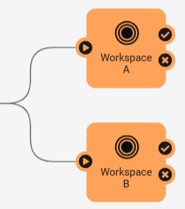
In this example, the incoming message is sent to Workspace A and Workspace B simultaneously. As long as FME Flow has multiple engines available, the workspaces will run simultaneously and independently of each other. If only one FME Flow engine is available, one workspace will run to completion, and the second will run after. There's no guarantee which workspace will run first unless you have some advanced Engine Management rules set up.
You should run actions in parallel if you have multiple tasks to complete in response to the same input, either a trigger or action, and the workspaces are independent, meaning they do not depend on datasets from one another, nor the success or failure of each other.
Conditional Processing
Conditional processing in Automations involves running workspaces or actions depending on a previous event or condition.
You can use the Filter Messages action in Automations to test simple Boolean conditions, evaluating them as true or false. The Filter action can filter on values from previous actions within the Automation.

To use the Filter on data within a workspace, you must use an Automations Writer to pass the data from the workspace to the Automation. We will cover the Automations Writer later in this course.
The Filter Messages action has success and failure ports to route messages depending on whether the condition is true or false.
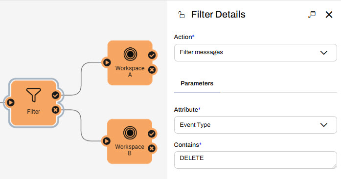
In this example, Workspace A runs if the Filter condition evaluates to true, and Workspace B runs if the condition is false. In a single run of the Automation, only Workspace A or Workspace B runs, not both.
The Filter action in Automations is somewhat limited in that it only supports simple conditions. You can use a Run a Workspace action with an Automations Writer to route data to various ports for more advanced filtering. You'll learn more about the Automations Writer later in this course.
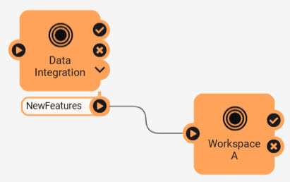
You may also wish to carry out certain translations in the unfortunate case that a job fails. To run a workspace in case of a workspace failure, you can attach Run a Workspace actions to the previous action failure port.
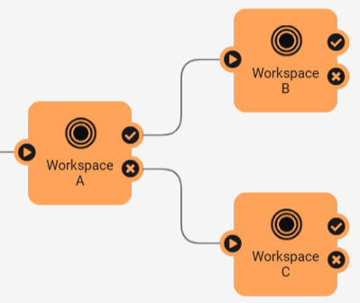
In this example, Workspace B runs if Workspace A succeeds, while Workspace C runs if Workspace A fails.

Sven, a planning analyst, is building an Automation to update election voting location information. He has two workspaces: one that updates a SpatiaLite database with electoral divisions and voting places, and another that assigns voting division IDs to addresses. He runs these workspaces consecutively, in order, as the second workspace relies on data updates from the first workspace.
Since election data does not change often, nor do elections occur frequently, Sven usually forgets to update the database manually. So, Sven will create an Automation with a Schedule trigger to run his workspaces in sequence and update the data yearly. The Schedule trigger also allows him to trigger the Automation manually if he needs to update the data for a specific event.
Follow along with Sven as he builds his Automation, which chains his workspaces sequentially.
1) Create Automation
Sven opens FME Flow and selects Create Automation in the side menu. If the Get Started window appears, he selects Create New...
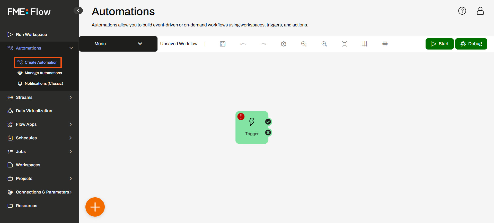
Your Automation may have the Next Action guides enabled. To remove them, expand the Automations Menu and select Hide Guides.
2) Add Schedule Trigger
Sven opens the trigger details and selects an FME Flow Schedule (initiated) trigger. He leaves the Schedule Type as Basic and sets the Recurrence to Yearly on Today's Date. He ensures Does Not Expire is checked and clicks Apply.
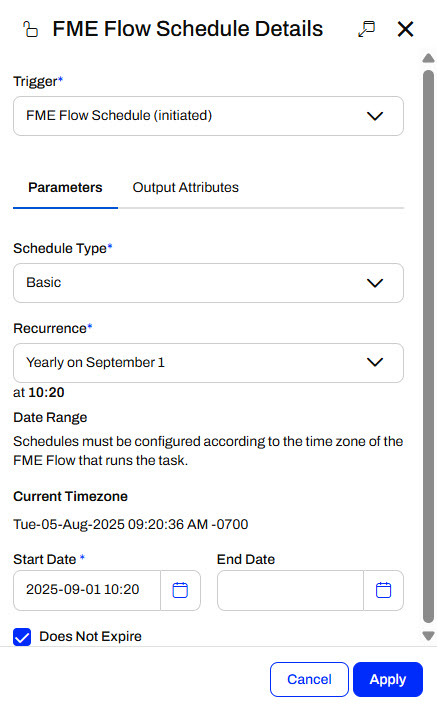
3) Add Run a Workspace Actions
Sven adds a Run a Workspace action to the trigger's success port and sets it to run the update-voting-places.fmw workspace in the Elections repository. The workspace has no parameters to configure, so Sven clicks Apply to save and close the action details.
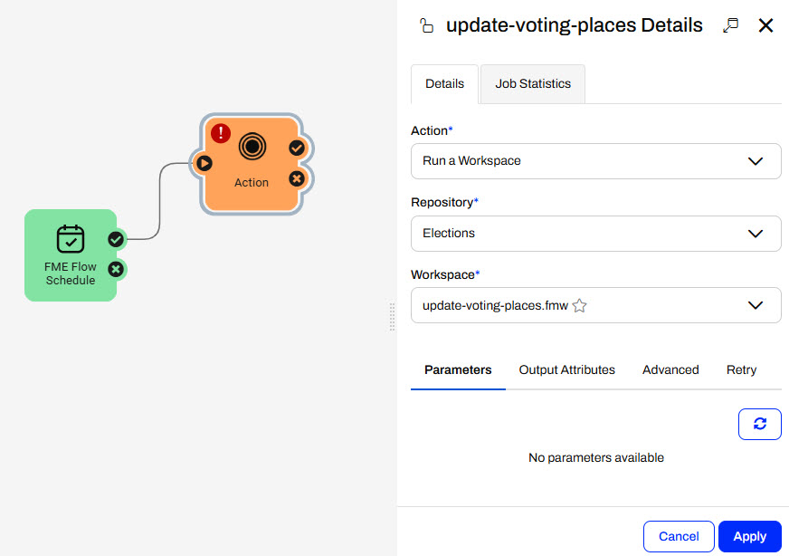
Sven adds another Run a Workspace action to the update-voting-places action and sets it to run the divide-addresses-by-voting-division.fmw workspace. Again, the workspace has no configurable parameters, so Sven clicks Apply.

3) Add Email Action
Sven adds an External Action to the second workspace's success port. He will send himself an alert each time the Automation successfully completes.
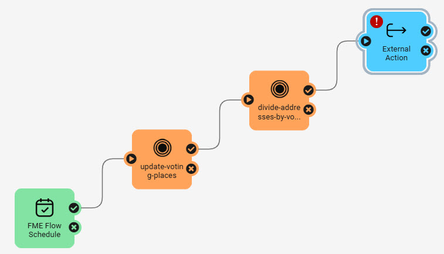
Sven opens the External Actions Details and selects the Email (send) action.
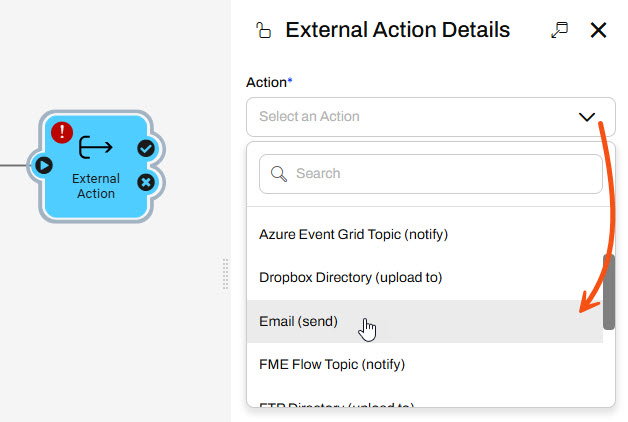
Sven will configure the action to use a Gmail account, so he selects Gmail using the Load Template option and pre-populates some of the SMTP parameters.

Sven enters these values for the SMTP parameters:
- SMTP Account: training.fmeflow@gmail.com
- SMTP Password: wjdmzjdkujkzmplw
- Connection Security: SSL/TLS
This Gmail account password changes regularly. Please only use it for FME training purposes, or configure your SMTP account for the Email action.
Sven enters his email for the Email To parameter and uses training.fmeflow@gmail.com for the Email From parameter.
Sven uses the drop-down arrow for the Email Subject to select the Automation Name.

For the Email Body, he uses the drop-down to select the Text Editor. He configures a message to send to himself using attributes on the left to customize it. He clicks Save to close the Text Editor.

Once Sven fills out all the required parameters, Sven clicks Validate.
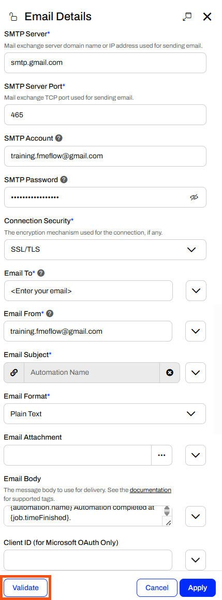
Sven must scroll to the top of the Parameters section to see the validation result. If all his parameters are valid, Sven clicks Apply.

5) Start and Trigger Automation
Sven saves his Automation as Election Location Update and clicks Start to run his Automation.
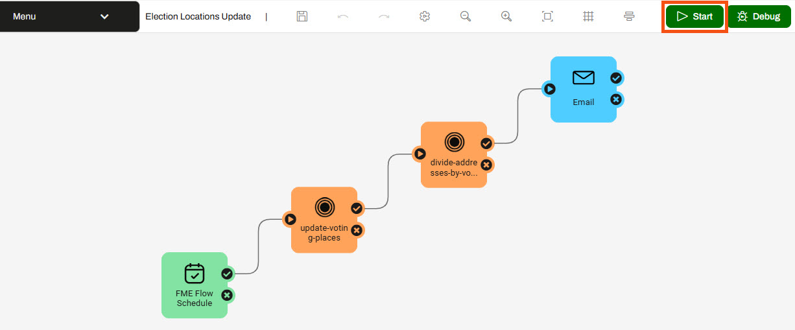
The Automation will run only on the scheduled date and time, so Sven will trigger it manually to test it. He opens the FME Flow Schedule Details and clicks Trigger.
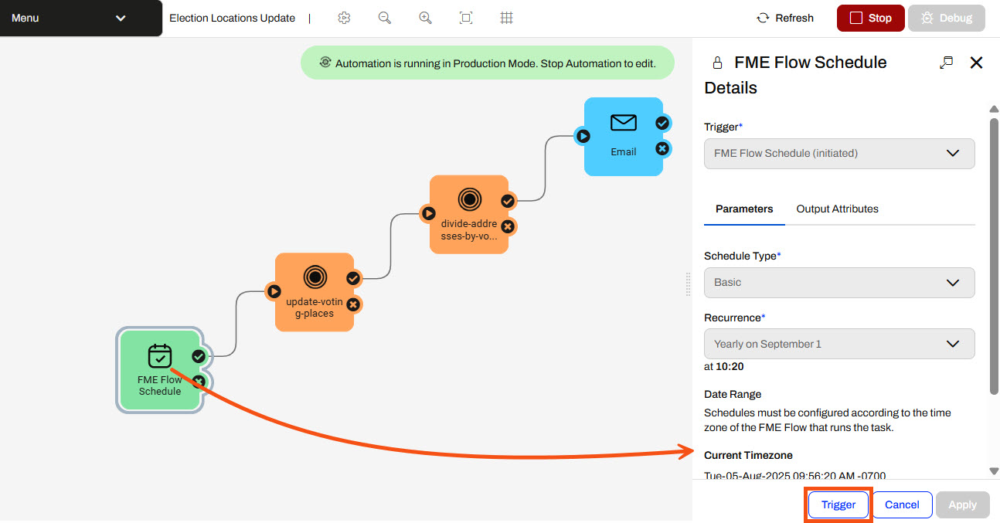
6) Check Jobs
Sven opens the Automations Menu and clicks View Triggered Jobs.
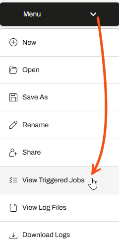
Both workspaces ran, and Sven saw that the second workspace did not begin to process until the first workspace was finished. Sven expects this as he wants the addresses to update with the newest voting division data from the first workspace.
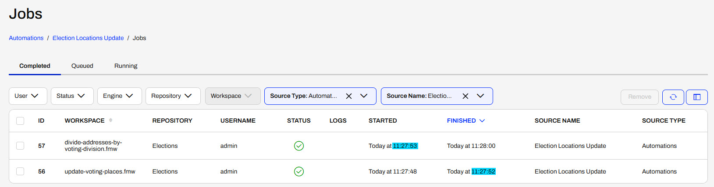
Sven also received an email that he configured with the Email external action.
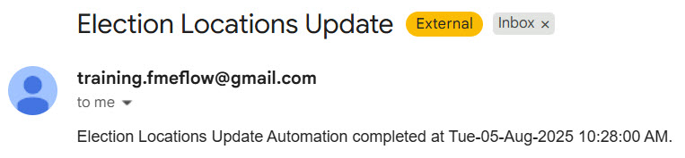
Sven now has multiple jobs chained in an Automation, ensuring one job does not begin to process until after another job completes. He also sent himself an email to notify himself when the Automation processes.